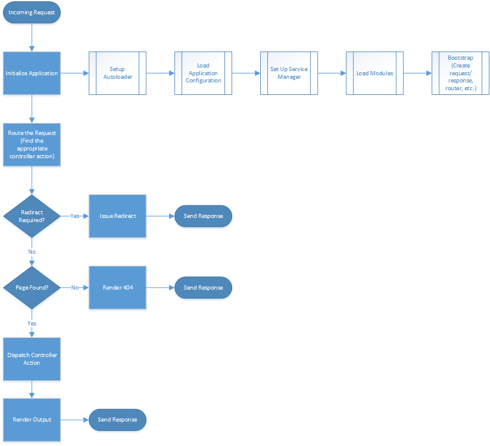

Forge Framework application flow is exactly that of ZF2 with a few additions. Below is a quick walk through of the application flow.

Forge Framework implements the Front Controller pattern where all requests are routed through a single point. This is an example of an index.php file which handles all incoming requests.
<?php
use Zend\Config\Config;
use Zend\Mvc\Application;
/**
* This makes our life easier when dealing with paths. Everything is relative
* to the application root now.
*/
chdir(dirname(__DIR__));
// Setup autoloading
require 'init_autoloader.php';
// Configure the application
$config = new Config(require 'config/application.global.php');
if (file_exists('config/application.local.php')) {
$config->merge(new Config(require 'config/application.local.php'));
}
// Initialize and run the application
Application::init($config)->run();
Lets break this file up into sections...
<?php
// Setup autoloading
require 'init_autoloader.php';
Forge Framework initially sets up autoloading based on composer configs and default loading for ZF2 and Forge Framework. Later in the application flow, modules add their autoload configuration as well.
<?php
// Configure the application!
$config = new Config(require 'config/application.global.php');
This loads a global configuration file which is shared across all environments and is stored in version control. This configuration is the minimal configuration needed to load the application. All other configuration is done from within modules. This tells the application what modules to load in what order. It also tells the application where to find other application config files, which directories to use for different things, whether to enable caching, etc.
<?php
// application.global.php
return [
'modules' => [
'ForgeApplication',
'ForgeAcl',
'ForgeUser',
'ForgeAdmin',
'ForgeDeveloperTools',
'Application',
],
'module_listener_options' => [
'config_cache_enabled' => false,
'cache_dir' => 'data/cache',
'config_glob_paths' => [
'config/autoload/{,*.}local.php',
'config/autoload/{,*.}global.php',
],
'module_paths' => [
'module/core',
'module/thirdparty',
'module/local',
],
],
];
An environment specific file is then merged on top to allow for settings like enabling or disabling caching or enabling css/js merging and minification.
<?php
if (file_exists('config/application.local.php')) {
$config->merge(new Config(require 'config/application.local.php'));
}
<?php
// application.local.php
return [
'module_listener_options' => [
'config_cache_enabled' => false,
],
];
All configuration merging is done with array_replace_recursive logic with one exception. If all indexes of an array are numeric, the second array is merged on top of the first instead like array_merge. This is done using ZF2's built in Config class.
The index file uses Application::init() to initialize the application. This is only a default configuration method for Forge Framework. The tasks within Application::init() could be placed directly into index.php as well if customization is needed.
<?php
// Initialize and run the application
Application::init($config);
<?php
// Zend\Mvc\Application
public static function init($configuration = array())
{
$smConfig = isset($configuration['service_manager']) ? $configuration['service_manager'] : array();
$serviceManager = new ServiceManager(new Service\ServiceManagerConfig($smConfig));
$serviceManager->setService('ApplicationConfig', $configuration);
$serviceManager->get('ModuleManager')->loadModules();
$listenersFromAppConfig = isset($configuration['listeners']) ? $configuration['listeners'] : array();
$config = $serviceManager->get('Config');
$listenersFromConfigService = isset($config['listeners']) ? $config['listeners'] : array();
$listeners = array_unique(array_merge($listenersFromConfigService, $listenersFromAppConfig));
return $serviceManager->get('Application')->bootstrap($listeners);
}
This sets up the service manager, loads all modules, then bootstraps the application.
The service manager is a service locator pattern. It also doubles as a dependency injection container. Through configuration, all classes and instances of classes can be substituted for others, initialized, run through factory constructors, and aliased. By default, the same instance of a class is returned every time it is requested from the service manager. A new object can be requested on demand. This effectively can be used as a singleton pattern as well.
ZF2 previous to initial release had a dedicated dependency injection implementation. This was deemed overcomplicated for the average user to use or care about, but the service manager worked well enough and had a simple enough interface that it became a direct replacement. The service manager still falls back to the original dependency injection implementation when no service configuration can be found. For more information on the service manager, read the [ZF2 documentation] (http://framework.zend.com/manual/2.3/en/modules/zend.service-manager.quick-start.html).
Modules are loaded in the order specified in the application configuration. This is event based.
These are the relevant events:
The following tasks are performed for each module, via events:
(Not entirely sure on the order. Need to review)
The application is bootstrapped once all modules are loaded and the configuration is complete. Routers are created based on the router map from the config.
<?php
// Zend\Application\Application
public function bootstrap(array $listeners = array())
{
$serviceManager = $this->serviceManager;
$events = $this->events;
$listeners = array_unique(array_merge($this->defaultListeners, $listeners));
foreach ($listeners as $listener) {
$events->attach($serviceManager->get($listener));
}
// Setup MVC Event
$this->event = $event = new MvcEvent();
$event->setTarget($this);
$event->setApplication($this)
->setRequest($this->request)
->setResponse($this->response)
->setRouter($serviceManager->get('Router'));
// Trigger bootstrap events
$events->trigger(MvcEvent::EVENT_BOOTSTRAP, $event);
return $this;
}
This enables the default route, dispatch, and view listeners, sets up the MvcEvent, and triggers the bootstrap event. Modules may implement an "onBootstrap" method. This method is run after the rest of the application has been initialized. This is the point where modules have all access to everything they may need within the application. Most module initialization should occur here.
<?php
// Zend\Application\Application
public function run()
{
$events = $this->events;
$event = $this->event;
// Define callback used to determine whether or not to short-circuit
$shortCircuit = function ($r) use ($event) {
if ($r instanceof ResponseInterface) {
return true;
}
if ($event->getError()) {
return true;
}
return false;
};
// Trigger route event
$result = $events->trigger(MvcEvent::EVENT_ROUTE, $event, $shortCircuit);
if ($result->stopped()) {
$response = $result->last();
if ($response instanceof ResponseInterface) {
$event->setTarget($this);
$event->setResponse($response);
$events->trigger(MvcEvent::EVENT_FINISH, $event);
$this->response = $response;
return $this;
}
if ($event->getError()) {
return $this->completeRequest($event);
}
return $this;
}
if ($event->getError()) {
return $this->completeRequest($event);
}
// Trigger dispatch event
$result = $events->trigger(MvcEvent::EVENT_DISPATCH, $event, $shortCircuit);
// Complete response
$response = $result->last();
if ($response instanceof ResponseInterface) {
$event->setTarget($this);
$event->setResponse($response);
$events->trigger(MvcEvent::EVENT_FINISH, $event);
$this->response = $response;
return $this;
}
$response = $this->response;
$event->setResponse($response);
$this->completeRequest($event);
return $this;
}
<?php
// Zend\Application\Application
protected function completeRequest(MvcEvent $event)
{
$events = $this->events;
$event->setTarget($this);
$events->trigger(MvcEvent::EVENT_RENDER, $event);
$events->trigger(MvcEvent::EVENT_FINISH, $event);
return $this;
}
The application is now set up and the request can be handled.
The first step is to attempt to route the request. The request URI is mapped to a route defined within the configuration. If the URI cannot be mapped, a 404 page is served. The request may also directly lead to a redirect. If so, the redirect is issued immediately. If a controller action can be determined from the request, the application dispatches to the controller. If the controller action does not exist, a 404 page is served. If it does exist, the action is executed.
The controller action may return a number of different response types. Depending on the response returned, a specific listener will pick the response up and process it.
These are the current possible return types and their behaviors:
These views are rendered by listeners of the MvcEvent::EVENT_RENDER event. New listeners can be attached to watch for different response types. For example, if xml output needed to be rendered, a listener could be registered to watch for a return type of SimpleXml.
Finally, the MvcEvent::EVENT_FINISH event fires. This handles the actual output to the browser. Headers are send first, then, the output is sent.